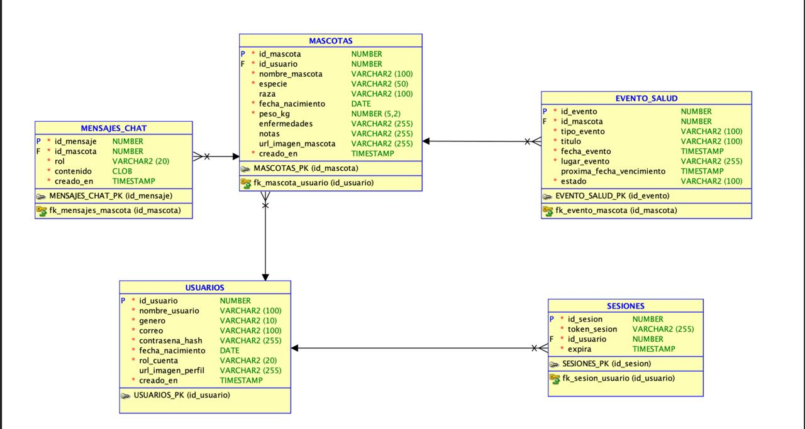
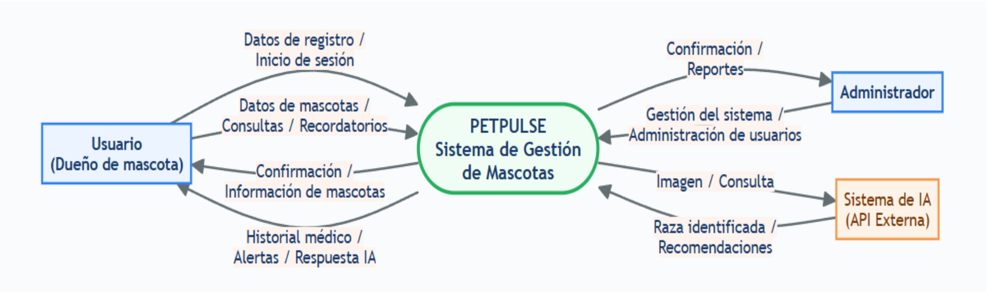
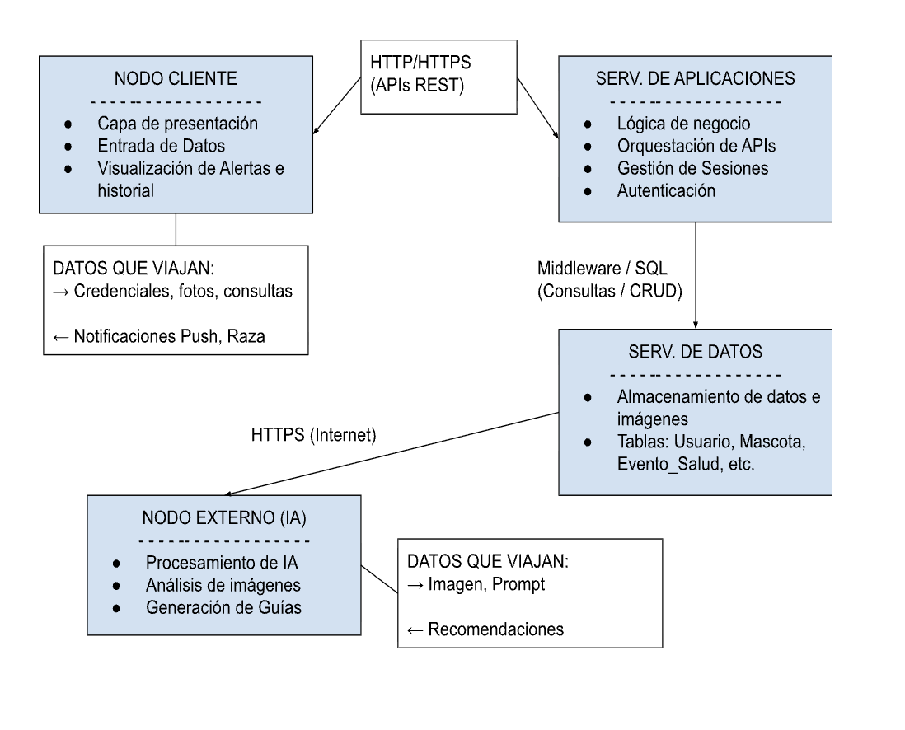

Investigación, Modelado y Documentación
En esta sección se documentan las investigaciones, modelos y estrategias desarrolladas por el equipo para la construcción del sistema PETPULSE, conforme a lo solicitado en la actividad de la asignatura Sistemas de Información I.
1 Fase de Definición: Investigación de Hechos
Responsable: Luis Jiménez
Todo proyecto de software exitoso comienza con una buena investigación. Antes de escribir una sola línea de código, creemos que es fundamental comprender el problema que queremos resolver, conocer a nuestros usuarios y validar que la solución realmente aporte valor. En esta primera fase de PETPULSE, nos enfocamos en recopilar información, analizar las necesidades de los dueños de mascotas y definir los requerimientos que servirán como base para el desarrollo de nuestra aplicación.
¿Qué es JAD o Desarrollo Conjunto de Aplicaciones?
El Desarrollo Conjunto de Aplicaciones (JAD o DCA) es una metodología que busca acelerar y mejorar el proceso de desarrollo de software mediante la colaboración constante entre desarrolladores, analistas, clientes y usuarios finales. La idea principal es que reunir a todos los involucrados desde las primeras etapas del proyecto permite obtener una visión más completa del problema, tomar mejores decisiones y construir una solución que realmente responda a las necesidades de los usuarios.
En lugar de trabajar de forma aislada, todos participan activamente en la definición de requerimientos y en la validación de las funcionalidades del sistema. Decidimos adoptar este enfoque porque queríamos que las decisiones del proyecto estuvieran respaldadas por las necesidades reales de quienes utilizarán la aplicación.
Aplicación de JAD en PETPULSE
Para el desarrollo de PETPULSE adoptamos esta metodología colaborativa, reduciendo la distancia entre el equipo técnico y los usuarios. Nos organizamos de la siguiente manera:
- Luis Jiménez asumió el rol de líder del proyecto, encargado de coordinar la visión general del sistema, organizar el trabajo y distribuir las funcionalidades entre los integrantes.
- Carolina, Carlos y Luis participamos en el análisis de requerimientos, el diseño y la construcción del sistema utilizando React para el frontend, Node.js para el backend y Oracle Database para el almacenamiento de datos y AWS S3 para el storage de las imágenes.
Nuestra estrategia de trabajo consistió en dividir el proyecto por funcionalidades (features), permitiendo que cada integrante desarrollara módulos específicos basados en las necesidades detectadas durante la investigación. De esta forma logramos mantener una mejor organización y asegurar que cada componente respondiera a un problema previamente identificado.
Análisis de problemas utilizando PIECES
Para comprender la situación actual del control veterinario tradicional utilizamos el marco de referencia PIECES, una herramienta que nos permitió clasificar los problemas encontrados desde diferentes perspectivas.
- Prestaciones (Performance): Identificamos que uno de los principales inconvenientes es la dificultad para acceder rápidamente al historial médico cuando el propietario cambia de veterinario o no dispone del carnet físico. Esto provoca retrasos en la atención y pérdida de continuidad en los tratamientos.
- Información: Observamos que la información almacenada en carnets y notas en papel suele estar incompleta, desorganizada o incluso ser ilegible. En situaciones de emergencia esto representa un riesgo importante.
- Economía: También detectamos que los olvidos de citas previamente pagadas y el incumplimiento de tratamientos médicos generan gastos adicionales que podrían evitarse con un mejor sistema de seguimiento.
- Control y seguridad: Comprobamos que el método tradicional no ofrece ningún mecanismo de respaldo. Si el carnet físico se pierde, se moja o se deteriora, toda la información desaparece sin posibilidad de recuperación.
- Eficiencia: Otro problema importante es que los veterinarios deben registrar nuevamente información que ya fue recopilada anteriormente, generando pérdida de tiempo tanto para el profesional como para el propietario de la mascota.
- Servicio: Finalmente, observamos que muchos dueños primerizos desconocen los calendarios de vacunación, los cuidados preventivos y las recomendaciones específicas según la raza de su mascota, lo que limita la calidad del servicio recibido.
Investigación de hechos
Para evitar construir una solución basada en suposiciones, decidimos aplicar diferentes técnicas de investigación que nos permitieran conocer las necesidades reales de los usuarios.
Observación directa
La primera técnica que utilizamos fue la observación participante. Como los tres integrantes del proyecto somos dueños de mascotas, pudimos experimentar directamente los problemas cotidianos relacionados con el control veterinario. Durante esta actividad identificamos que encontrar información médica en momentos de estrés o durante un viaje resulta complicado y poco práctico. Esta experiencia nos permitió confirmar que existe la necesidad de contar con una aplicación móvil que centralice toda la información médica de las mascotas.
Entrevistas estructuradas
Como complemento de la investigación realizamos entrevistas individuales con perfiles específicos para obtener información más detallada. Entrevistamos a María, una dueña de mascota con poco tiempo disponible; José, médico veterinario; y Andrea, dueña primeriza.
Gracias a estas entrevistas descubrimos necesidades que no habían surgido en los cuestionarios, entre ellas la importancia de incorporar un sistema de identificación de razas mediante inteligencia artificial para ofrecer recomendaciones y planes de cuidado personalizados.
Catálogo de requerimientos
Una vez concluida la investigación definimos los requerimientos que conformarán la primera versión funcional del sistema.
Requerimientos funcionales
Las funcionalidades principales del MVP serán:
- Identificación automática de razas mediante inteligencia artificial utilizando las APIs de OpenAI o Gemini.
- Sistema de alertas para recordar vacunas y citas veterinarias.
- Historial médico digital con operaciones completas de creación, consulta, actualización y eliminación de registros.
- Generación de reportes médicos en formato PDF para compartir información con terceros.
Requerimientos no funcionales
Además de las funcionalidades, también establecimos características relacionadas con la calidad del sistema:
- La aplicación deberá cargar en menos de tres segundos.
- Las contraseñas y los datos sensibles deberán almacenarse de forma segura mediante mecanismos de cifrado en Oracle Database.
- La interfaz deberá ser completamente responsive para facilitar su uso desde dispositivos móviles.
Alcance y restricciones del proyecto
En esta primera etapa, decidimos enfocar PETPULSE principalmente en los dueños de mascotas, ofreciéndoles una solución digital para el seguimiento de la salud de sus animales. Sin embargo, desde el inicio pensamos en la escalabilidad del proyecto, por lo que diseñamos una arquitectura que permita incorporar en futuras versiones un módulo destinado a clínicas veterinarias para gestionar directamente la información de sus pacientes.
En cuanto a las restricciones tecnológicas, trabajaremos utilizando React, Node.js y Oracle Database. Además, tendremos que administrar cuidadosamente el consumo de las APIs de inteligencia artificial para mantenernos dentro de las cuotas gratuitas disponibles y garantizar la viabilidad del proyecto.
2 Fase de Modelización: El "Blueprint" del Sistema PETPULSE
Responsable: Luis Jiménez
En esta fase transformamos los requerimientos detectados en la Investigación de Hechos en modelos técnicos estructurados. Estos modelos definen la lógica de datos, los flujos de procesos y la arquitectura física y de conectividad que soportarán el ecosistema de PETPULSE.
A. Modelado de Datos (Estructura)
Para garantizar una base de datos relacional estable, consistente y escalable, desarrollamos el Diagrama Entidad-Relación (DER) en Oracle SQL Developer utilizando la notación de Ingeniería de la Información (Pata de Gallo).

Descripción del Modelo y Componentes
Entidades Fuertes (Núcleo del negocio):
- USUARIOS: Almacena la información de los dueños (id_usuario, nombre_usuario, correo, contrasena_hash, rol_cuenta, etc.).
- MASCOTAS: Guarda los datos del sujeto principal del sistema (id_mascota, id_usuario, nombre_mascota, especie, raza, peso_kg, etc.).
Entidades Débiles (Dependientes):
- SESIONES: Gestiona la autenticación activa y tokens de los usuarios (id_sesion, token_sesion, expira). Depende de USUARIOS.
- EVENTO_SALUD: Registra el historial clínico y calendario de vacunación/citas (id_evento, tipo_evento, titulo, fecha_evento, estado). Depende de MASCOTAS.
- MENSAJES_CHAT: Conserva la interacción contextual con la IA (id_mensaje, rol, contenido). Depende de MASCOTAS.
Normalización e Integridad Referencial:
- Tercera Forma Normal (3FN): Se eliminaron dependencias transitivas y redundancias atómicas.
- Regla ON DELETE CASCADE: Configurada en todas las Claves Foráneas (FK). Si un usuario borra su cuenta, sus mascotas y sesiones se eliminan automáticamente; del mismo modo, borrar una mascota elimina en cascada sus eventos de salud y mensajes de chat asociados, evitando registros huérfanos.
B. Modelado de Procesos (Flujo)
Mediante la técnica de Análisis Estructurado, modelamos el flujo dinámico de la información utilizando Diagramas de Flujo de Datos (DFD).
1. Diagrama de Contexto (Nivel 0)
Representa al sistema como una entidad central unificada ("caja negra") para establecer los límites del proyecto y sus interacciones con el entorno externo.

Agentes Externos:
- Usuario (Dueño de mascota): Interactúa enviando datos de registro, información médica y prompts con fotos; recibe confirmaciones, alertas de salud y respuestas contextuales.
- Administrador: Envía parámetros de gestión/administración de usuarios y recibe reportes del sistema.
- Sistema de IA (API Externa): Recibe la imagen y consulta procesada; devuelve la raza identificada y recomendaciones.
2. DFD de Nivel 1: Explosión de Procesos
Realizamos la descomposición funcional para abrir la caja negra y detallar los 6 subsistemas principales con sus respectivos almacenes de datos:
Subprocesos del Sistema:
- 1.0 Gestionar Usuarios: Administra el registro, autenticación y manejo de perfiles contra D1 - Usuarios.
- 2.0 Gestionar Mascotas: Mantiene la información física de los animales en D2 - Mascotas.
- 3.0 Gestionar Salud: Modifica y consulta el historial clínico registrado en D3 - Historial Médico.
- 4.0 Gestionar Citas y Recordatorios: Agenda y emite las alertas almacenadas en D4 - Citas y D5 - Recordatorios.
- 5.0 Asistencia PetIA: Canaliza las imágenes y prompts hacia la API externa y recibe la clasificación/recomendaciones.
- 6.0 Administración: Permite al administrador del sistema auditar usuarios y solicitar reportes.
C. Modelado de Redes (Conectividad)
Para estructurar la arquitectura lógica y física, diseñamos el Diagrama de Conexión de Puestos, mapeando la distribución de los componentes en la red y los datos que viajan entre nodos.

Distribución por Nodos y Protocolos
- Nodo Cliente (Frontend): Ubicado en el dispositivo del usuario (Web/Móvil). Capa de presentación, entrada de datos y visualización de alertas e historial. Transmite credenciales, consultas y fotos hacia el Servidor de Aplicaciones vía HTTP/HTTPS (APIs REST).
- Servidor de Aplicaciones (Backend): Servidor central de lógica de negocio. Orquestación de APIs, autenticación y gestión de sesiones. Se comunica con la base de datos mediante SQL/Middleware y con la red externa vía HTTPS.
- Servidor de Datos (Persistencia): Base de datos Oracle. Almacenamiento persistente de las tablas (USUARIOS, MASCOTAS, EVENTO_SALUD, SESIONES, MENSAJES_CHAT).
- Nodo Externo (API de IA): Cloud (API Google Gemini). Visión por computadora para análisis de fotos y generación de recomendaciones. Recibe Imagen / Prompt y retorna Recomendaciones / Raza.
3 Fase de Control: Diccionario de Proyecto
Responsable: Carlos Marval
La fase de control tiene como objetivo mantener organizada toda la información que se va generando durante el desarrollo del proyecto. Para ello se utiliza el Diccionario de Proyecto, que funciona como un documento donde se registran todos los elementos que forman parte del sistema, permitiendo que el equipo trabaje con la misma información y evitando confusiones durante el desarrollo.
Una de las recomendaciones más importantes es que el diccionario no debe elaborarse al finalizar el proyecto, sino que debe actualizarse constantemente. Cada vez que se crea una entidad en el Diagrama Entidad-Relación (DER), un proceso o un flujo de datos en el Diagrama de Flujo de Datos (DFD), este debe registrarse inmediatamente en el diccionario, manteniendo la documentación organizada y actualizada a medida que el proyecto avanza.
El Diccionario de Proyecto incluye la definición de los datos, las estructuras, los procesos y los flujos de información utilizados en el sistema, permitiendo que cualquier integrante del equipo comprenda fácilmente el significado de cada elemento y cómo se relaciona con los demás modelos desarrollados. Además, sirve como apoyo para mantener la coherencia entre todos los diagramas del proyecto: si en el DER aparece una entidad como Mascota, o en el DFD existe un proceso como Gestionar Mascotas, ambos deben encontrarse definidos dentro del diccionario.
En otras palabras, si un dato, proceso, flujo o estructura no aparece registrado en el Diccionario de Proyecto, se considera que ese elemento no forma parte oficialmente del sistema. Por esta razón, el diccionario se convierte en una herramienta fundamental para mantener la organización, la consistencia y el control de toda la documentación del proyecto.
Definiciones de datos (Entidades)
| Elemento | Definición |
|---|---|
| Usuario | Persona que utiliza PETPULSE para registrar y administrar la información de sus mascotas. |
| Mascota | Animal registrado en el sistema, del cual se almacenan sus datos personales y de salud. |
| Cita | Registro de una cita programada para atención veterinaria o servicio de peluquería. |
| Recordatorio | Aviso creado por el usuario para recordar vacunas, medicamentos o citas importantes. |
Estructuras (Almacenes de datos)
| Almacén | Definición |
|---|---|
| D1 — Usuarios | Guarda la información de todos los usuarios registrados en la plataforma. |
| D2 — Mascotas | Almacena los datos generales de las mascotas registradas. |
| D3 — Historial Médico | Contiene la información relacionada con vacunas, enfermedades y antecedentes médicos de cada mascota. |
| D4 — Citas | Guarda las citas veterinarias y de peluquería programadas por los usuarios. |
| D5 — Recordatorios | Almacena los recordatorios creados para vacunas, medicamentos y otros cuidados. |
Flujos de datos
| Flujo | Definición |
|---|---|
| Datos de usuario | Información que el usuario ingresa para registrarse, iniciar sesión o actualizar su perfil. |
| Datos de mascota | Información utilizada para registrar o modificar los datos de una mascota. |
| Solicitud de cita | Datos enviados por el usuario para programar una cita. |
| Confirmación | Respuesta enviada por el sistema indicando que una acción fue realizada correctamente. |
| Consulta a PetIA | Pregunta realizada por el usuario al chatbot sobre el cuidado de su mascota. |
| Respuesta de PetIA | Recomendación u orientación básica generada por el chatbot. |
Procesos
| Proceso | Definición |
|---|---|
| Gestionar usuarios | Permite registrar usuarios, iniciar sesión y actualizar la información del perfil. |
| Gestionar mascotas | Permite registrar, consultar y modificar la información de las mascotas. |
| Gestionar salud de la mascota | Permite llevar el control del historial médico, vacunas y enfermedades de cada mascota. |
| Gestionar citas y recordatorios | Permite programar citas y crear recordatorios relacionados con el cuidado de la mascota. |
| Asistencia PetIA | Brinda orientación básica sobre el cuidado de las mascotas y recomienda acudir al veterinario cuando sea necesario. |
| Administración del sistema | Permite al administrador gestionar la información de los usuarios registrados. |
4 Estrategia de Desarrollo: Prototipado y Ciclo de Vida
Responsable: Kimberly Zapata
Para el desarrollo del sistema PETPULSE se adoptó un enfoque de Desarrollo Rápido de Aplicaciones (RAD, por sus siglas en inglés Rapid Application Development). Este modelo prioriza la construcción iterativa de prototipos por encima de una planificación exhaustiva previa, permitiendo obtener retroalimentación temprana de los usuarios (dueños de mascotas) y ajustar el sistema de forma progresiva antes de invertir grandes esfuerzos en el desarrollo final.
La elección de RAD para PETPULSE se justifica porque el proyecto requiere validar rápidamente la usabilidad de funciones clave — como el registro de mascotas, el historial médico digital y los recordatorios de salud— con usuarios reales, reduciendo el riesgo de construir funcionalidades que no resuelvan sus necesidades reales.
Ciclo de vida aplicado: tres iteraciones
Modelado básico y prototipo de baja fidelidad
- Levantamiento de requisitos iniciales con los futuros usuarios.
- Definición de los módulos principales: registro de mascota, historial de salud, recordatorios y perfil de usuario.
- Elaboración de maquetas (wireframes) en papel o herramientas como Figma, sin colores ni funcionalidad real.
- Objetivo: validar el flujo de navegación y la estructura general de pantallas antes de programar.
Refinamiento del modelo y prototipo funcional
- Incorporación de retroalimentación obtenida en la Iteración 1.
- Diseño visual definitivo: paleta de colores, tipografía y componentes de interfaz.
- Construcción de un prototipo interactivo o clickeable con datos de prueba (mock data).
- Pruebas de usabilidad con un grupo reducido de usuarios para detectar mejoras.
Ingeniería de la información completa y sistema final
- Modelado formal de datos: diagrama entidad-relación y base de datos definitiva.
- Desarrollo del sistema funcional completo, integrando frontend y backend.
- Pruebas de integración, corrección de errores y optimización.
- Entrega del sistema final listo para su implementación y uso.